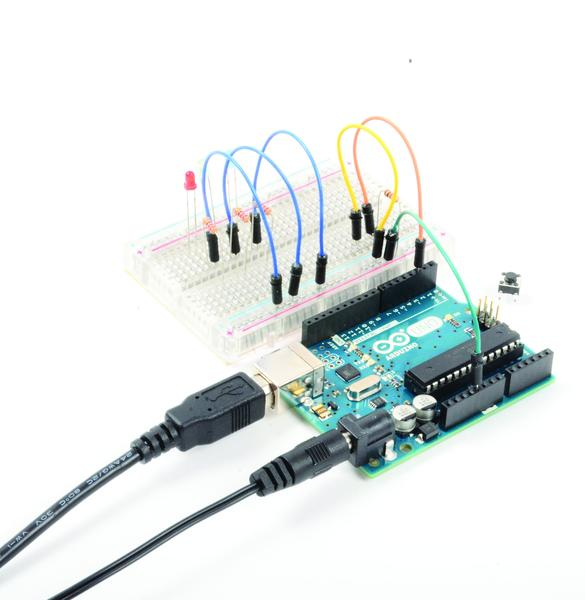
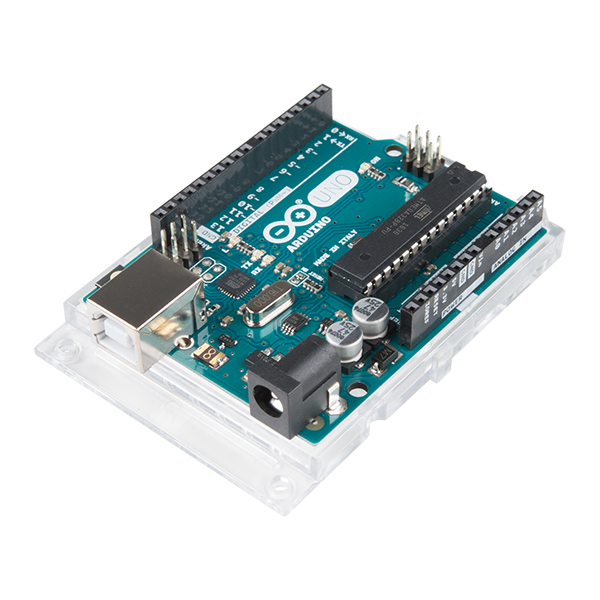
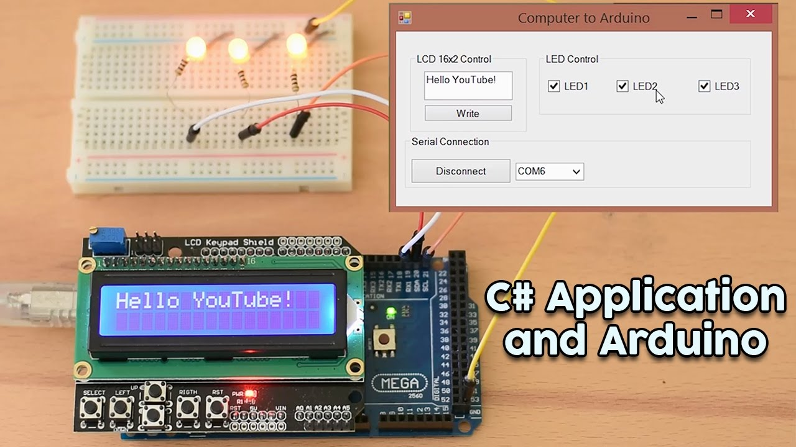
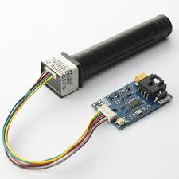
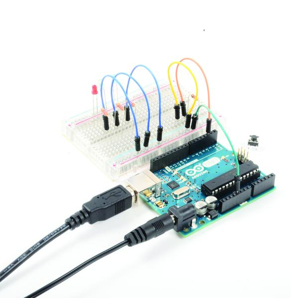
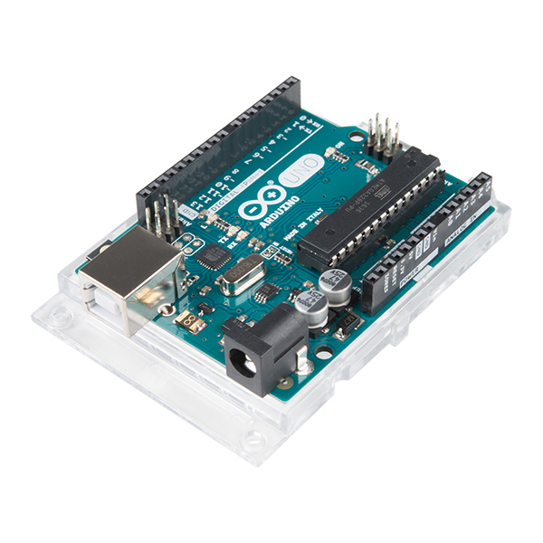
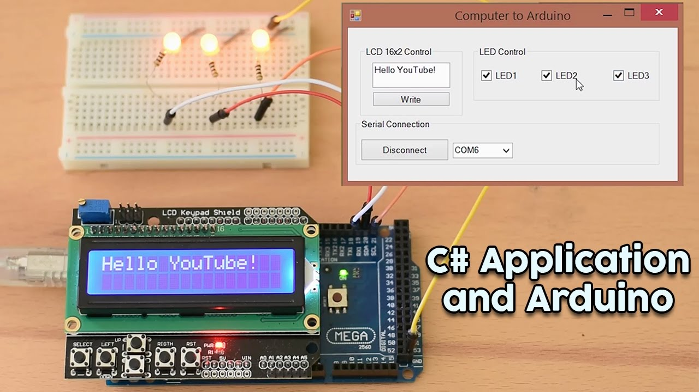
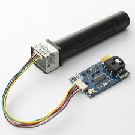

Robotics with arduino
Potrebni dijelovi i alati
- 1 x Arduino Uno/Duemilanova
- 1 x standardni servo motor
- 1 x L293D drajver motora
- 2 x plastični DC motor sa reduktorom
- 2 x točkovi, kompatibilni sa plastičnim motorima
- 1 x Omnidirekcioni točak (eng. Castor Wheel)
- 1 x Sharp GP2D12 analogni senzor rastojanja
Baterije
- 2 x konektori za baterije
- 1 x plastična ploča
Ostali dijelovi
Kako bismo povezali sve dijelove robota sa Arduino razvodnom pločom, biće nam potrebna jedna manja matador ploča. Također, kako bismo stvarali veze na matador ploči, biće nam potreban set muško-muških džampera.
Sklapanje robota i povezivanje dijelova
Kada smo pribavili sve potrebne dijelove i alat, možemo krenuti sa sastavljanjem našeg robota. Prvo ćemo zalemiti komade provodnika na kontakte pogonskih motora. Drugu stranu zalemljenih provodnika kasnije treba povezati na matador ploču sa drugim komponentama, pa morate koristiti provodnike koje je moguće utaknuti u matador. Zatim, na osovine motora treba postaviti točkove. Kao što smo već rekli, naši točkovi se pomoću vijaka pričvršćuju za osovine. Nakon toga treba postaviti omnidirekcioni točak na ploču koju ćemo koristiti kao osnovu robota. Iako na sebi ima otvore za postavljanje vijaka, točak ćemo sa pločom spojiti pomoću obostrane ljepljive trake. Na taj način ćemo izbjeći bušenje ploče i u velikoj mjeri pojednostaviti izradu. Točak treba da se nalazi sa prednje strane robota i treba da bude postavljen na sredini ploče, kako se robot ne bi prevrtao.
Galerija
 






